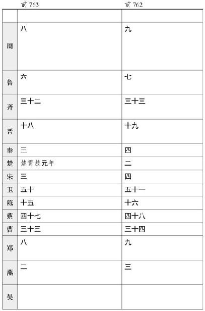

汲黯 字长孺 ，濮阳 人也。其先有宠于古之卫君 。至黯 七世，世为卿大夫。黯 以父任，孝景 时为太子洗马，以庄见惮。孝景帝 崩，太子即位，黯 为谒者。东越 相攻，上使黯 往视之。不至，至吴 而还，报曰：“越 人相攻，固其俗然，不足以辱天子之使。”河内 失火，延烧千馀家，上使黯 往视之。还报曰：“家人失火，屋比延烧，不足忧也。臣过河南 ，河南 贫人伤水旱万馀家，或父子相食，臣谨以便宜，持节发河南 仓粟以振贫民。臣请归节，伏矫制之罪。”上贤而释之，迁为荥阳 令。黯耻为令，病归田里。上闻，乃召拜为中大夫。以数切谏，不得久留内，迁为东海 太守。黯 学黄老 之言，治官理民，好清静，择丞史而任之。其治，责大指而已，不苛小。黯 多病，卧闺 内不出。岁馀，东海 大治。称之。上闻，召以为主爵都尉，列于九卿。治务在无为而已，弘大体，不拘文法。
黯 为人性倨，少礼，面折，不能容人之过。合己者善待之，不合己者不能忍见，士亦以此不附焉。然好学，游侠，任气节，内行修絜，好直谏，数犯主之颜色，常慕傅柏 、袁盎 之为人也。善灌夫 、郑当时 及宗正刘弃 。亦以数直谏，不得久居位。
当是时，太后弟武安侯蚡 为丞相，中二千石来拜谒，蚡 不为礼。然黯 见蚡 未尝拜，常揖之。天子方招文学儒者，上曰吾欲云云，黯 对曰：“陛下内多欲而外施仁义，奈何欲效唐虞 之治乎！”上默然，怒，变色而罢朝。公卿皆为黯 惧。上退，谓左右曰：“甚矣，汲黯 之戆也！”群臣或数黯 ，黯 曰：“天子置公卿辅弼之臣，宁令从谀承意，陷主于不义乎？且已在其位，纵爱身，奈辱朝廷何！”
黯 多病，病且满三月，上常赐告者数，终不愈。最后病，庄助 为请告。上曰：“汲黯 何如人哉？”助 曰：“使黯 任职居官，无以逾人。然至其辅少主，守城深坚，招之不来，麾之不去，虽自谓贲育 亦不能夺之矣。”上曰：“然。古有社稷之臣，至如黯 ，近之矣。”
大将军青 侍中，上踞厕而视之。丞相弘 燕见，上或时不冠。至如黯 见，上不冠不见也。上尝坐武帐中，黯 前奏事，上不冠，望见黯 ，避帐中，使人可其奏。其见敬礼如此。
张汤 方以更定律令为廷尉，黯 数质责汤 于上前，曰：“公为正卿，上不能褒先帝之功业，下不能抑天下之邪心，安国富民，使囹圄空虚，二者无一焉。非苦就行，放析就功，何乃取高皇帝 约束纷更之为？公以此无种矣。”黯 时与汤 论议，汤 辩常在文深小苛，黯 伉厉守高不能屈，忿发骂曰：“天下谓刀笔吏不可以为公卿，果然。必汤 也，令天下重足而立，侧目而视矣！”
是时，汉 方征匈奴 ，招怀四夷。黯 务少事，乘上间，常言与胡 和亲，无起兵。上方向儒术，尊公孙弘 。及事益多，吏民巧弄。上分别文法，汤 等数奏决谳以幸。而黯 常毁儒，面触弘 等徒怀诈饰智以阿人主取容，而刀笔吏专深文巧诋，陷人于罪，使不得反其真，以胜为功。上愈益贵弘 、汤 ，弘 、汤 深心疾黯 ，唯天子亦不说也，欲诛之以事。弘 为丞相，乃言上曰：“右内 史 界部中多贵人宗室，难治，非素重臣不能任，请徙黯 为右内史。”为右内史数岁，官事不废。
大将军青 既益尊，姊为皇后，然黯 与亢礼。人或说黯 曰：“自天子欲群臣下大将军，大将军尊重益贵，君不可以不拜。”黯 曰：“夫以大将军有揖客，反不重邪？”大将军闻，愈贤黯 ，数请问国家朝廷所疑，遇黯 过于平生。
淮南王 谋反，惮黯 ，曰：“好直谏，守节死义，难惑以非。至如说丞相弘 ，如发蒙振落耳。”
天子既数征匈奴 有功，黯 之言益不用。
始黯 列为九卿，而公孙弘 、张汤 为小吏。及弘 、汤 稍益贵，与黯 同位，黯 又非毁弘 、汤 等。已而弘 至丞相，封为侯；汤 至御史大夫；故黯 时丞相史皆与黯 同列，或尊用过之。黯 褊心，不能无少望，见上，前言曰：“陛下用群臣如积薪耳，后来者居上。”上默然。有间黯 罢，上曰：“人果不可以无学，观黯 之言也日益甚。”
居无何，匈奴浑邪王 率众来降，汉 发车二万乘。县官无钱，从民贳马。民或匿马，马不具。上怒，欲斩长安 令。黯 曰：“长安 令无罪，独斩黯 ，民乃肯出马。且匈奴 畔其主而降汉 ，汉 徐以县次传之，何至令天下骚动，罢弊中国而以事夷狄之人乎！”上默然。及浑邪 至，贾人与市者，坐当死者五百馀人。黯 请间，见高门 ，曰：“夫匈奴 攻当路塞，绝和亲，中国兴兵诛之，死伤者不可胜计，而费以巨万百数。臣愚以为陛下得胡 人，皆以为奴婢以赐从军死事者家；所卤获，因予之，以谢天下之苦，塞百姓之心。今纵不能， 浑邪 率数万之众来降，虚府库赏赐，发良民侍养，譬若奉骄子。愚民安知市买长安 中物而文吏绳以为阑出财物于边关乎？陛下纵不能得匈奴 之资以谢天下，又以微文杀无知者五百馀人，是所谓‘庇其叶而伤其枝’者也，臣窃为陛下不取也。”上默然，不许，曰：“吾久不闻汲黯 之言，今又复妄发矣。”后数月，黯 坐小法，会赦免官。于是黯 隐于田园。
居数年，会更五铢钱，民多盗铸钱，楚 地尤甚。上以为淮阳 ，楚 地之郊，乃召拜黯 为淮阳 太守。黯 伏谢不受印，诏数强予，然后奉诏。诏召见黯 ，黯 为上泣曰：“臣自以为填沟壑，不复见陛下，不意陛下复收用之。臣常有狗马病，力不能任郡事，臣愿为中郎，出入禁闼，补过拾遗，臣之愿也。”上曰：“君薄淮阳 邪？吾今召君矣。顾淮阳 吏民不相得，吾徒得君之重，卧而治之。”黯 既辞行，过大行李息 ，曰：“黯 弃居郡，不得与朝廷议也。然御史大夫张汤 智足以拒谏，诈足以饰非，务巧佞之语，辩数之辞，非肯正为天下言，专阿主意。主意所不欲，因而毁之；主意所欲，因而誉之。好兴事，舞文法，内怀诈以御主心，外挟贼吏以为威重。公列九卿，不早言之，公与之俱受其僇矣。”息 畏汤 ，终不敢言。黯 居郡如故治，淮阳 政清。后张 汤 果败，上闻黯 与息 言，抵息 罪。令黯 以诸侯相秩居淮阳 。七岁而卒。
卒后，上以黯
故，官其弟汲仁
至九卿，子汲偃
至诸侯相。黯
姑姊子司
马安
亦少与黯
为太子洗马。安
文深巧善宦，官四至九卿，以河南
太守卒。昆弟以安
故，同时至二千石者十人。濮阳段宏
始事盖侯
信，信
任宏
，宏
亦再至九卿。然卫
人仕者皆严惮汲黯
，出其下。
郑当时 者，字庄 ，陈 人也。其先郑君 尝为项籍 将；籍 死，已而属汉 。高 祖 令诸故项籍 臣名籍，郑君 独不奉诏。诏尽拜名籍者为大夫，而逐郑君 。郑君 死孝文 时。
郑庄 以任侠自喜，脱张羽 于厄，声闻梁楚 之间。孝景 时，为太子舍人。每五日洗沐，常置驿马长安 诸郊，存诸故人，请谢宾客，夜以继日，至其明旦，常恐不遍。庄 好黄老 之言，其慕长者如恐不见。年少官薄，然其游知交皆其大父行，天下有名之士也。武帝 立，庄 稍迁为鲁 中尉、济南 太守、江 都 相，至九卿为右内史。以武安侯 、魏其 时议，贬秩为詹事，迁为大农令。
庄 为太史，诫门下：“客至，无贵贱无留门者。”执宾主之礼，以其贵下人。庄 廉，又不治其产业，仰奉赐以给诸公。然其馈遗人，不过算器食。每朝，候上之间，说未尝不言天下之长者。其推毂士及官属丞史，诚有味其言之也，常引以为贤于己。未尝名吏，与官属言，若恐伤之。闻人之善 言，进之上，唯恐后。山 东士诸公以此翕然称郑庄 。
郑庄 使视决河 ，自请治行五日。上曰：“吾闻‘郑庄 行，千里不赍粮’，请治行者何也？”然郑庄 在朝，常趋和承意，不敢甚引当否。及晚节，汉 征匈奴 ，招四夷，天下费多，财用益匮。庄 任人宾客为大农僦人，多逋负。司 马安 为淮阳 太守，发其事，庄 以此陷罪，赎为庶人。顷之，守长史。上以为老，以庄 为汝南 太守。数岁，以官卒。
郑庄
、汲黯
始列为九卿，廉，内行修絜。此两人中废，家贫，宾客益落。及居郡，卒后家无馀赀财。庄
兄弟子孙以庄
故，至二千石六七人焉。
太史公 曰：夫以汲 、郑 之贤，有势则宾客十倍，无势则否，况众人乎！下邽翟公 有言，始翟公 为廷尉，宾客阗门；及废，门外可设雀罗。翟公 复为廷尉，宾客欲往，翟公 乃大署其门曰：“一死一生，乃知交情。一贫一富，乃知交态。一贵一贱，交情乃见。”汲 、郑 亦云，悲夫！